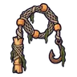

ชาวประมงจมน้ำ
มอนธาตุอมตะ Lv 22–28
เจอที่
| แมพ | โซน | Lv | ภูมิภาค |
|---|---|---|---|
| หมู่บ้านเรือนเสาร้าง | 22–28 | ป่ากองไฟ | |
| หมู่บ้านเรือนเสาร้าง | กลางหมู่บ้านเรือนเสา | 27–28 | ป่ากองไฟ |
ค่าสถานะตามเลเวล
| Lv | HP | ATK | DEF | MDEF | EXP | Job |
|---|---|---|---|---|---|---|
| 22 | 1,825 | 37–55 | 6 | 5 | 32 | 24 |
| 25 | 1,826 | 40–59 | 7 | 6 | 36 | 27 |
| 28 | 2,182 | 44–66 | 8 | 7 | 39 | 29 |
ตีด้วยธาตุไหนดี
แรงขึ้น: ศักดิ์สิทธิ์ ×1.5 ไฟ ×1.25
เบาลง: พิษ ×0 มืด ×0 อมตะ ×0
วัตถุดิบที่ดรอป
| ของ | โอกาส | |
|---|---|---|
| ตะขอเบ็ดสนิม | 55% | 1 ชิ้น (15% ได้ 2) |
อุปกรณ์ที่ดรอป (1)
| ของ | โอกาส |
|---|---|
 แส้แหชาวประมงจมน้ำ | 0.25% |
สกิล
ยิงกระจาย (Lv 25+) · ยิงกระจาย (Lv 60+) · ปาตกใส่ (Lv 60+)